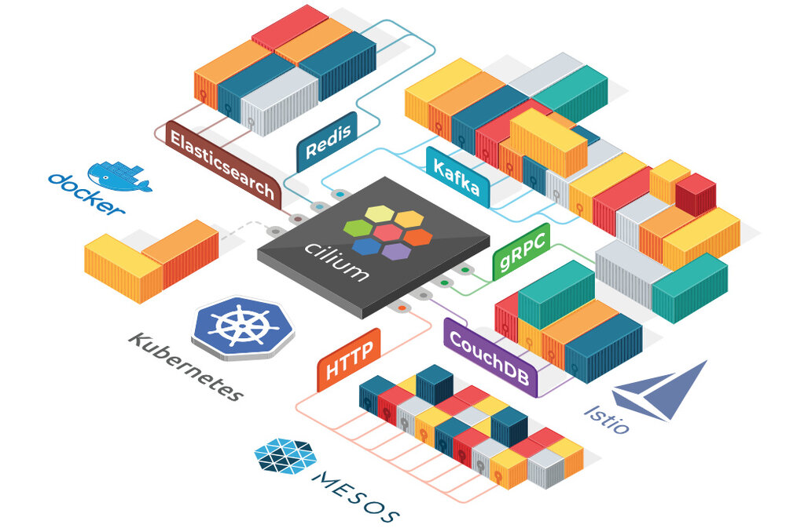

Cilium是一个纯开源软件，没有哪家公司提供商业化支持，也不是由某一公司开源，该软件用于透明地保护使用Linux容器管理平台（如Docker和Kubernetes）部署的应用程序服务之间的网络连接。
Cilium的基础是一种名为BPF的新Linux内核技术，它可以在Linux本身动态插入强大的安全可见性和控制逻辑。由于BPF在Linux内核中运行，因此可以应用和更新Cilium安全策略，而无需对应用程序代码或容器配置进行任何更改。

基于微服务的应用程序分为小型独立服务，这些服务使用HTTP、gRPC、Kafka等轻量级协议通过API相互通信。但是，现有的Linux网络安全机制（例如iptables）仅在网络和传输层（即IP地址和端口）上运行，并且缺乏对微服务层的可见性。
Cilium为Linux容器框架（如Docker和Kubernetes）带来了API感知网络安全过滤。使用名为BPF的新Linux内核技术，Cilium提供了一种基于容器/容器标识定义和实施网络层和应用层安全策略的简单而有效的方法。
注：Cilium中文意思是“纤毛“，它十分细小而又无处不在。
BPF
柏克莱封包过滤器（Berkeley Packet Filter，缩写 BPF），是类Unix系统上数据链路层的一种原始接口，提供原始链路层封包的收发，除此之外，如果网卡驱动支持洪泛模式，那么它可以让网卡处于此种模式，这样可以收到网络上的所有包，不管他们的目的地是不是所在主机。参考维基百科和eBPF简史。
特性
以下是Cilium的特性。
基于身份的安全性
Cilium可见性和安全策略基于容器编排系统的标识（例如，Kubernetes中的Label）。在编写安全策略、审计和故障排查时，再也不用担心网络子网或容器IP地址了。
卓越的性能
BPF利用Linux底层的强大能力，通过提供Linux内核的沙盒可编程性来实现数据路径，从而提供卓越的性能。
API协议可见性+安全性
传统防火墙仅根据IP地址和端口等网络标头查看和过滤数据包。Cilium也可以这样做，但也可以理解并过滤单个HTTP、gRPC和Kafka请求，这些请求将微服务拼接在一起。
专为扩展而设计
Cilium是为扩展而设计的，在部署新pod时不需要节点间交互，并且通过高度可扩展的键值存储进行所有协调。
为什么选择Cilium？
现代数据中心应用程序的开发已经转向面向服务的体系结构（SOA），通常称为微服务，其中大型应用程序被分成小型独立服务，这些服务使用HTTP等轻量级协议通过API相互通信。微服务应用程序往往是高度动态的，作为持续交付的一部分部署的滚动更新期间单个容器启动或销毁，应用程序扩展/缩小以适应负载变化。
这种向高度动态的微服务的转变过程，给确保微服务之间的连接方面提出了挑战和机遇。传统的Linux网络安全方法（例如iptables）过滤IP地址和TCP/UDP端口，但IP地址经常在动态微服务环境中流失。容器的高度不稳定的生命周期导致这些方法难以与应用程序并排扩展，因为负载均衡表和访问控制列表要不断更新，可能增长成包含数十万条规则。出于安全目的，协议端口（例如，用于HTTP流量的TCP端口80）不能再用于区分应用流量，因为该端口用于跨服务的各种消息。
另一个挑战是提供准确的可见性，因为传统系统使用IP地址作为主要识别工具，其在微服务架构中的寿命可能才仅仅几秒钟，被大大缩短。
利用Linux BPF，Cilium保留了透明地插入安全可视性+强制执行的能力，但这种方式基于服务/pod/容器标识（与传统系统中的IP地址识别相反），并且可以根据应用层进行过滤 （例如HTTP）。因此，通过将安全性与寻址分离，Cilium不仅可以在高度动态的环境中应用安全策略，而且除了提供传统的第3层和第4层分割之外，还可以通过在HTTP层运行来提供更强的安全隔离。 。
BPF的使用使得Cilium能够以高度可扩展的方式实现以上功能，即使对于大规模环境也不例外。
功能概述
透明的保护API
能够保护现代应用程序协议，如REST/HTTP、gRPC和Kafka。传统防火墙在第3层和第4层运行，在特定端口上运行的协议要么完全受信任，要么完全被阻止。Cilium提供了过滤各个应用程序协议请求的功能，例如：
- 允许所有带有方法
GET和路径/public/.*的HTTP请求。拒绝所有其他请求。 - 允许
service1在Kafka topic上生成topic1，service2消费topic1。拒绝所有其他Kafka消息。 - 要求HTTP标头
X-Token: [0-9]+出现在所有REST调用中。
详情请参考7层协议。
基于身份来保护服务间通信
现代分布式应用程序依赖于诸如容器之类的技术来促进敏捷性并按需扩展。这将导致在短时间内启动大量应用容器。典型的容器防火墙通过过滤源IP地址和目标端口来保护工作负载。这就要求不论在集群中的哪个位置启动容器时都要操作所有服务器上的防火墙。
为了避免受到规模限制，Cilium为共享相同安全策略的应用程序容器组分配安全标识。然后，该标识与应用程序容器发出的所有网络数据包相关联，从而允许验证接收节点处的身份。使用键值存储执行安全身份管理。
安全访问外部服务
基于标签的安全性是集群内部访问控制的首选工具。为了保护对外部服务的访问，支持入口（ingress）和出口（egress）的传统基于CIDR的安全策略。这允许限制对应用程序容器的访问以及对特定IP范围的访问。
简单网络
一个简单的扁平第3层网络能够跨越多个集群连接所有应用程序容器。使用主机范围分配器可以简化IP分配。这意味着每个主机可以在主机之间没有任何协调的情况下分配IP。
支持以下多节点网络模型：
-
Overlay：基于封装的虚拟网络产生所有主机。目前VXLAN和Geneve已经完成，但可以启用Linux支持的所有封装格式。
何时使用此模式：此模式具有最小的基础架构和集成要求。它几乎适用于任何网络基础架构，唯一的要求是主机之间可以通过IP连接。
-
本机路由：使用Linux主机的常规路由表。网络必须能够路由应用程序容器的IP地址。
何时使用此模式：此模式适用于高级用户，需要了解底层网络基础结构。此模式适用于：
- 本地IPv6网络
- 与云网络路由器配合使用
- 如果您已经在运行路由守护进程
负载均衡
应用程序容器和外部服务之间的流量的分布式负载均衡。负载均衡使用BPF实现，允许几乎无限的规模，并且如果未在源主机上执行负载均衡操作，则支持直接服务器返回（DSR）。
注意：负载均衡需要启用连接跟踪。这是默认值。
监控和故障排除
可见性和故障排查是任何分布式系统运行的基础。虽然我们喜欢用tcpdump和 ping，它们很好用，但我们努力为故障排除提供更好的工具。包括以下工具：
- 使用元数据进行事件监控：当数据包被丢弃时，该工具不仅仅报告数据包的源IP和目标IP，该工具还提供发送方和接收方的完整标签信息等。
- 策略决策跟踪：为什么丢弃数据包或拒绝请求。策略跟踪框架允许跟踪运行工作负载和基于任意标签定义的策略决策过程。
- 通过Prometheus导出指标：通过Prometheus导出关键指标，以便与现有仪表板集成。
集成
- 网络插件集成：CNI、libnetwork
- 容器运行时：containerd
- Kubernetes：NetworkPolicy、Label、Ingress、Service
- 日志记录：syslog、fluentd